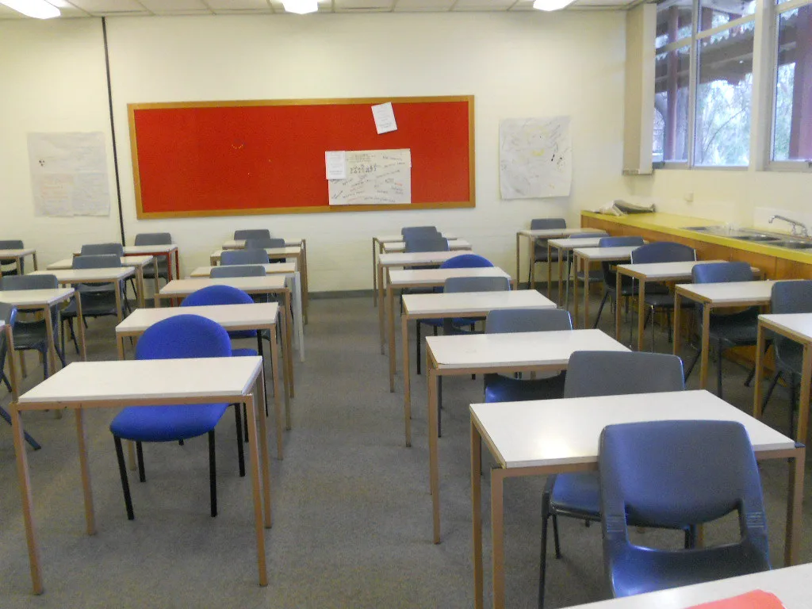
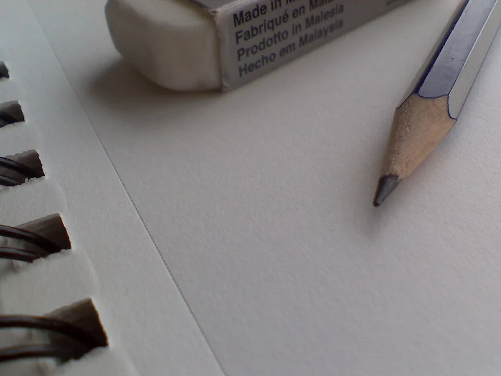

앞으로 고등학교 내신 시험에서 스마트기기를 이용한 부정행위가 적발되면 그날 치른 모든 과목의 점수가 0점으로 처리된다. 교육부는 생성형 AI와 스마트기기를 활용한 이른바 'AI 커닝'을 막기 위한 학교 시험 부정행위 대책을 내놓았다. 지금까지는 부정행위가 드러난 해당 과목만 0점 처리하고 징계 수위는 학교 자율에 맡겨 왔지만, 이번 대책은 성적 불이익과 징계를 모두 한층 무겁게 하는 데 초점을 맞췄다.
핵심은 처벌 범위의 확대다. 시험 중 휴대전화 등 스마트기기를 소지하거나 사용하다 적발되면 해당 과목뿐 아니라 적발 당일 응시한 전 과목이 0점이 된다. 징계와 관련해서는 고등학생의 경우 최소 출석정지부터 최대 퇴학까지 가능하도록 학칙을 고치라고 각 학교에 권고했다. 다만 부정행위가 적발됐다고 곧바로 퇴학 처분이 내려지는 것은 아니며, 구체적인 수위는 학교별 학칙과 사안의 경중에 따라 정해진다.

중학생에게는 기준이 다르게 적용된다. 중학교는 의무교육 과정이어서 퇴학이라는 징계 자체를 둘 수 없기 때문에, 중학생에 대한 최고 수위 징계는 출석정지로 정해졌다. 새 기준은 올해 2학기 고등학교 기말고사부터 우선 적용된다. 학기말 시험을 앞둔 시점에 곧바로 시행되는 만큼, 학교 현장에서는 학칙 개정과 학생·학부모 안내를 서둘러야 하는 상황이다.
시험 감독 방식도 달라진다. 시험이 시작되기 전 휴대전화를 비롯한 모든 전자기기를 걷어 따로 보관하고, 시험 당일에는 학교 와이파이를 차단해 교내에서 AI 서비스에 접속하는 길을 원천적으로 막는다. 금속탐지기는 부정행위가 의심되는 정황이 있거나 학생이 시험실에 다시 들어올 때 등 필요한 경우에 활용하도록 안내했다. 교육부는 내년 1월 스마트안경을 포함한 각종 스마트기기 부정행위 실태를 조사할 계획이라고 밝혔다.
이번 대책이 나온 배경에는 기기의 빠른 진화가 있다. 문제를 촬영하면 몇 초 만에 풀이를 보여주는 AI 서비스가 일상화됐고, 겉보기에는 일반 안경이나 시계와 구분하기 어려운 스마트기기도 늘었다. 최근 대학수학능력시험을 둘러싼 부정행위 논란으로 교육 당국의 책임론이 커진 상황에서, 대학 입시에 직접 반영되는 내신 시험까지 공정성 시비에 휘말리는 것을 막겠다는 의도로 풀이된다.

실효성을 두고는 의문도 제기된다. 이번 대책이 지필고사 위주로 짜여 있어, 과제 준비 과정에서 AI가 광범위하게 쓰이는 수행평가에 대한 관리 방안은 빠졌다는 지적이 나온다. 퇴학 등 최고 수위 징계가 실제로 적용되려면 학교마다 학칙을 개정해야 하는 만큼, 학교 간 처분 기준이 들쭉날쭉해질 수 있다는 우려도 있다. 시험 감독을 맡는 교사들의 업무 부담이 늘어날 것이라는 현장의 목소리도 함께 나온다.
교육계에서는 처벌 강화와 함께 AI 시대에 맞는 평가 방식에 대한 고민이 병행돼야 한다는 의견이 적지 않다. 단속만으로는 빠르게 발전하는 기기를 따라잡기 어려운 만큼, 암기형 문항을 줄이고 사고 과정을 확인하는 방향으로 평가를 바꿔야 한다는 것이다. 우선은 올해 2학기 기말고사가 새 기준의 첫 시험대가 될 전망이며, 교육부가 내년 초 실시할 실태 조사 결과에 따라 추가 보완책이 나올지 주목된다.